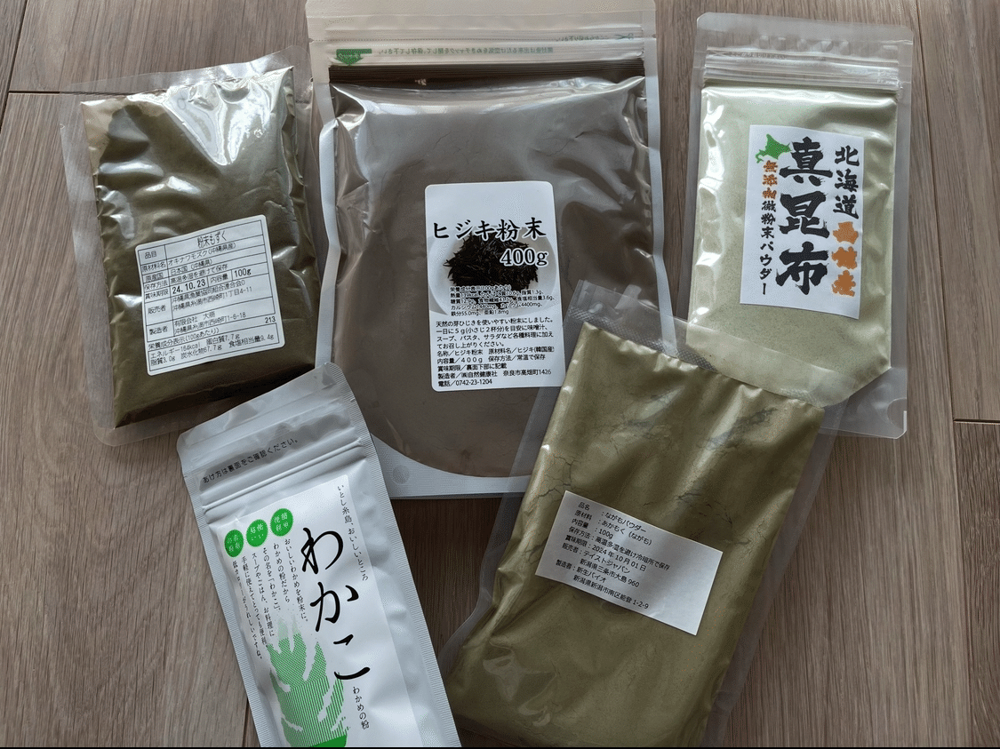
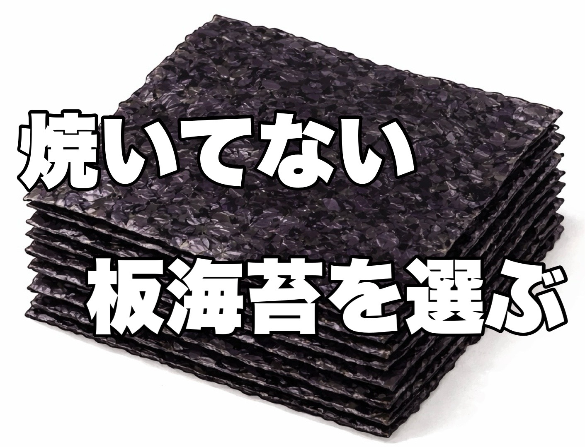
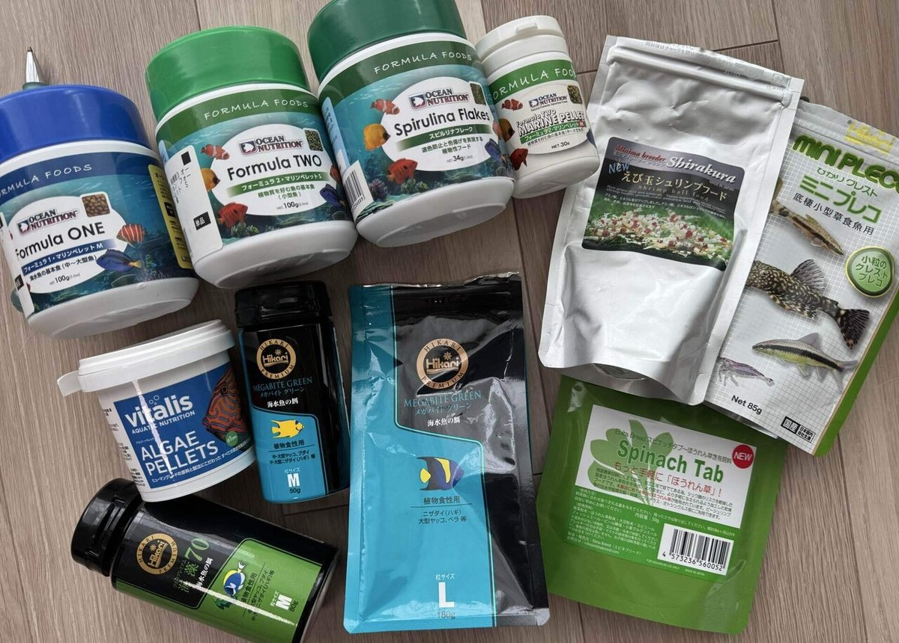

【海水魚の餌】 第９回：
海藻質補給は？ ―海藻粉・海苔・人工餌の活用
Published: 2026.02.27
今回は草食寄りの魚・雑食の魚たちへの海藻質（藻類）補給についていろいろと掘り下げて行こうと思います。
前回までは生餌（冷凍餌）に関するお話が中心でしたが──
今回は人工餌の活用についてのお話につながっていきます。
そう、完全に生餌至上主義者に転身した訳じゃないんです(笑)
魚の健康と長期飼育に挑むためにも、
必要な要素を補うなら現実的に使えるものは適宜併用していく──
そんなスタンスでやっています。
本記事では“草食魚”という表記を使いますが、
海水魚にとっての“草”は“海藻（藻類）”を意味しています。
陸上植物と違い、「海藻（藻類）は原生生物界に分類される」まったく別の生き物です。生態・組織・栄養組成などに明らかな違いがあります。
実際に彼らが必要としているのは“海藻質”“藻類”の栄養補給なので、その表記で本記事は統一いたします。
今回も文献の引用部分では、なるべくエビデンスベースで主観を排しつつ構成していきます。そのぶん文章がやや堅く感じられるかもしれませんが、ご了承ください。
１．草食性・雑食性の魚に何故必要か？
アイゴ・ハギなど草食性が強い魚や、自然下では適度に藻類を摂餌している雑食性の魚を飼育するうえで、やはり海藻質の給餌は外せないと思います。
そういった魚たちは海藻質を食べる前提で消化器機能や栄養要求・代謝機能が発達しているからです。
具体的には、腸が長く、腸内に繊維質を分解できる微生物が共生しており、これらの微生物による発酵で藻類などの繊維質を分解します。
また魚種によっては、藻類を基質ごと摂取したり砂粒を同時に飲み込むことで、筋肉質の胃や咽頭歯による物理的処理、さらに強い胃酸による化学的処理など複合的な消化過程を持つことで、短鎖脂肪酸を生成・吸収することでエネルギー源としています。
まとめると、草食魚や雑食魚は海藻質を摂餌することを前提に、物理処理・腸内発酵・短鎖脂肪酸利用・繊維分解・ミネラル摂取を行うよう栄養要求・代謝系が構築されていて、
これらが不足すると、このエネルギー供給経路が使えず、代謝が乱れたり、栄養要求のズレが生じる可能性があります（FAO Technical Paper 384）。
２．海藻が持つ栄養や機能性成分
では、海藻に含まれている様々な栄養素・機能性成分の面からみて行きましょう。
■海藻がもつ「多糖類」
海藻多糖類は水溶性食物繊維（フコイダン、アルギン酸、ラムナン硫酸、ラミナランなど）のことで、人の健康維持にも役立つ様々な機能性を持つことが知られています。
特に、免疫機能の調節、抗腫瘍作用、抗炎症作用、抗酸化作用、血圧上昇抑制作用、血糖値上昇抑制作用、コレステロール低下作用、整腸作用などが報告されています。（Fitton, 2011）
一方、これらは魚類においても免疫賦活作用、抗酸化作用、腸内環境の改善、ストレス耐性向上、疾病耐性強化などの機能性が確認されており、魚の健康維持に役立つ成分です（角田,2004）ほか。
■海藻がもつ「もうひとつの食物繊維」
海藻は不溶性食物繊維（セルロースなど）が豊富に含まれています。
これらは魚類の給餌時に腸管内容物を増加させ蠕動運動を促進し、整腸作用を示します。
また、腸内細菌の基質となり短鎖脂肪酸の生成を促し、腸内環境を整えることで健康維持に寄与します。（Krogdahl et al., 2005）
■海藻がもつ「色素」
海藻には光合成に関わるクロロフィルや、カロテノイド、フィコビリンなど多様な色素が含まれていることが知られています。
第４回 生餌のメリットⅡの第５章でお話したとおり、それらの人への機能性が盛んに研究されています。
一方魚での研究も少しずつ進んでいます。
例えば、褐藻に含まれるフコキサンチンは、魚類で黄色～オレンジ系の色揚げ作用や抗酸化作用、ストレス耐性・健康維持効果が示されています（Akiba et al., 2002）ほか。
紅藻由来のフィコエリスリンも色揚げ補助・抗酸化作用を通じて魚類の健康維持に寄与する可能性があります。（Gatlin et al., 2007）。
魚類での研究はまだ不明な点も多く残されていますが、今後さらに詳細に解明されるのが待たれます。
■海藻がもつ「タンパク質」
海藻類はタンパク質含有量が乾燥重量あたりで15～40%と意外と高く、魚類の栄養源として有用であり、特に海苔・アオサは高タンパクの傾向があります。
加えて海水魚の必須栄養素であるタウリンが、種によってばらつきはあるものの、褐藻・紅藻類では0.3～2.0%程度含まれることが特徴で（川﨑ら, 2018）、大事な補給源にもなっています。タウリンの重要性については第４回 生餌のメリットⅡの第４章で詳しく述べてますので参考にしてください。
■海藻がもつ「ビタミン・ミネラル」
海藻はビタミンとミネラルを豊富に含む、栄養価の高い食材です。
特に、カルシウム、鉄、ヨウ素などのミネラルや、ビタミンA、ビタミンC、ビタミンE、ビタミンK、ビタミンB群などが含まれています。
市販の添加剤に頼る事なく食物から自然な形で補えるのが魅力ですね。
■海藻がもつ「ポリフェノール類・テルペノイド類」
海藻には機能性成分であるポリフェノール類が含まれており、褐藻に多いフロロタンニンなどが知られています。
これらは強い抗酸化作用、抗炎症作用、抗菌作用などを持つことが知られており、魚類においても酸化ストレスの軽減、免疫賦活、疾病耐性の向上に寄与する可能性があります。
また、海藻にはテルペノイド類も含まれており、褐藻や紅藻由来のラメラリン、セスキテルペン、ジテルペン、トリテルペンなどが報告されています。これらも抗酸化作用、抗炎症作用、抗菌・抗腫瘍作用などの機能性を有し、魚類においても健康維持や疾病抵抗力の向上に寄与する可能性があります。
■海藻がもつ「旨味成分」
海藻にはグルタミン酸、アスパラギン酸、グリシン、アラニン、プロリンなどさまざまな旨味成分が含まれています。
魚類もそれを嗅覚・味覚で感知し、摂餌を誘発すると言われています。
さらにこれらは遊離アミノ酸であり、消化の必要なく腸管から迅速に吸収され、タンパク質合成やエネルギー供給に利用されたり、腸絨毛保護（間接的に腸内環境改善に寄与）も担っています。
また、「美味しいと感じる」と、幸せホルモンと呼ばれるセロトニンやドーパミンが分泌され、精神安定や幸福感につながることが知られています。
魚類でもセロトニン・ドーパミン神経系が存在し、摂餌時に活性化することが示されています（Winberg et al., 1997; Lepage et al., 2002）。
３．生の海藻を生かす試み
前章でも触れたとおり、海藻にはさまざまな栄養素が含まれており
魚類の健康や長期飼育のためにも是非取り入れたい！
加熱に弱い、フコキサンチンなどの色素やビタミンＣ・Ｂ群の事もあり
生餌メインに切り替えた際に「海藻もなんとか生を活用できないか？」と思いました。
食用の生モズク・生ワカメなどを冷凍ハンバーグに加える試みをしたことがあります。
しかし、第６回 冷凍餌加工に伴うリスクI・リスクⅡで述べたとおり自家製冷凍ハンバーグには色々と問題があり作るのをやめたので・・・
そのあとはどうするか？？
食用の生モズクを刻んだり
食用の海ブドウを与えてみたり
リフジウムのタカヅキヅタなど間引いて与えてみたり
いろいろと試してみました。
ところが、魚によって食いにむらがあり食べ残しがフィルターに詰まる、
一部未消化で糞で出てくるなど、
実際に給餌するとさまざまな問題点が出て来ました。
ここで調べてみてわかったのは、
「海藻の細胞壁は強固な食物繊維でできており、魚には消化しづらい」
ということでした。
海藻の細胞壁の成分
■セルロース（不溶性食物繊維）
魚類はセルラーゼ（セルロース分解酵素）を持たないため、自身の消化酵素では分解できません。（Krogdahl et al., 2005）。
■アルギン酸・フコイダン・その他硫酸化多糖類（水溶性食物繊維）
魚類の消化酵素では分解できず、ほとんど消化吸収されません（Krogdahl et al., 2005）。
これらは一部、腸内細菌による発酵で分解される場合もありますが
魚種差が大きく、草食魚であっても 腸内細菌による部分的な分解にとどまり、消化率は低いとされています（Halver & Hardy, 2002）。
自然下では魚種によっては、
咽頭歯によるすり潰しや、藻類を基質ごと摂取したり細かい砂粒を同時に飲み込むことで、筋肉質の胃が砂嚢のような働きをして粉砕する物理処理が行われていたり、さらに強い胃酸による化学的処理など
複合的な消化過程を持つことでカバーしています。
というわけで、これらも全ての魚種に当てはまる事ではなく
飼育下では全ての魚が海藻の細胞内の栄養を吸収出来る量は限られる可能性があります。
消化吸収率を上げるには、加熱や粉砕・発酵処理といった加工で細胞壁を破壊し、栄養素のアクセスを容易にする必要があるようです。
４．海藻粉を活用する方法
そこで思いついたのが
人用の海藻粉（無添加・健康食品用）を利用する方法です。
コンブ粉・ワカメ粉・アカモク粉・モズク粉・ヒジキ粉などが
健康食品店や通販で入手可能です。
これらは熱風乾燥後にパウダー状へ粉砕して製造されており、
生の海藻より消化吸収に優れている可能性が高い材料と言えます。

私はこれに少量の水を加え「海藻団子」を作って与えています。
海藻にはもともと粘り気があるため、団子にしても水中で簡単に崩れないのもありがたい性質です。
そして、意外と嗜好性も高くて多くの魚たちが喜んで食べてくれます。
これは第２章で挙げた「うまみ成分」（グルタミン酸・アスパラギン酸など）が摂餌誘引を促すためだと考えています。
「海藻を効率よく魚に与える方法として、とても良い手段だと思っています。」
興味のある方は、機会があればぜひ試してみてください。
ただし、
これらの海藻粉は無添加だけに保存方法にはちょっと気を配る必要があります。
・開封後は冷蔵保存で１～２か月を目安に使うと安心。
・量が多い場合は１か月分ずつ密封し、冷凍保存すれば半年くらいは余裕で持ちます。
・海藻団子は給餌の都度作って、作ったらすぐ与えるのが基本になります。
毎回作るのが少し面倒なのと、我が家のように魚が多い場合は均等に行き渡らせるのが意外と大変で、大量に団子を作って投入しないといけません。
そのため、「良い方法とわかっていながら、ついサボり気味」なのが正直なところです（笑）。
５．海苔を活用する方法
私は板海苔を給餌ルーティンに入れて、積極的に魚に与えています。
近所のスーパーでも手軽に入手できるうえ、
嗜好性が高く、その栄養価にも魅力を感じるからです。
製造工程でも原料を粉砕後に熱風乾燥しているため、
細胞壁がある程度破壊されており、消化もしやすいと考えています。
アメリカのマリンアクアの給餌シーンでも「Nori」と呼ばれて登場することが多く、専用クリップで留めて沈めると魚が群がる動画を見たことがある方もいるでしょう。
ついばみ行動を通じてストレス発散にもつながり、魚たちにとってポイントの高い餌だと感じています。
海苔は海藻の中でも、タンパク質（乾燥重量換算で含有量30〜40%）が豊富で、必須アミノ酸のタウリンも多く（乾燥重量換算で1〜2%）、栄養源として非常に優秀です。
タウリンについては第４回 生餌のメリットⅡの第４章で詳しく紹介しています。
さらにグルタミン酸、イノシン酸、グアニル酸などのうまみ成分が多く含まれており、その相乗効果によって強いうまみを感じられるとされています。そのため嗜好性が高く、魚たちも喜んで食べてくれます。

また海苔には天然色素も豊富で、クロロフィル（緑色）、カロテノイド（橙色）、フィコエリスリン（赤色）、フィコシアニン（青色）が混ざり合って黒っぽい紫色に見えますが、
フィコエリスリンとフィコシアニンは熱に弱いため、焼くことで分解されてしまいます。焼き海苔が緑っぽく見えるのはそのためです。
ですので、私は色素が残る、焼いていない板海苔（乾海苔・寿司海苔）を与えています。
フィコエリスリンとフィコシアニンには抗酸化・抗炎症・免疫調整作用の可能性が示唆されており、体色維持への寄与も期待できると考えているからです。
※味付け海苔は避けてください。
多量の塩分や各種調味料などが添加されていて不適だと考えます。
６．人工餌を活用する方法
ここまでいろいろと試してきましたが
海藻質補給には「藻類を強化した人工餌」も活用しています。
藻類の補給に重点を置いてるので、なるべく原料が被らないように、
魚の口の大きさに合わせて、海水魚用とは限らずにプレコ用やビーシュリンプ用のフードも取り入れています。

現在与えてる人工飼料の原料欄をみると
藻類としてはケルプ粉・海藻粉・海苔・スピルリナ・クロレラ
植物質としてほうれん草粉・アルファルファ粉
などが使用されています。
水産飼料用のケルプ粉・海藻粉を使ってると推測すると原料詳細が見えてきます。
■ケルプ粉
南北アメリカの寒流域（チリ・カナダ・米国・ペルーなど）で採れる大型褐藻（ケルプ）を乾燥粉砕したものが輸入されています。
■海藻粉
東南アジア（インドネシア・フィリピン・タイなど）で採れる紅藻類や緑藻類、褐藻類を単種あるいは混合し、乾燥粉砕したものが輸入されています。
つまり原料欄を詳しく追う事で原料が被っていない事が確認出来ます。
人工餌を活用する場合でも、なるべく原料の多様性は確保したいと考えています。それぞれに栄養特性が異なるからです。
人工餌は製造時に粉砕・加熱・加圧処理をしているので、
藻類の細胞壁は破壊されて、内部の栄養素が魚の消化酵素で利用可能になっていると考えられます。
その結果、生海藻より高い吸収効率になる可能性があります。
加熱に弱い機能性成分は多く失われてしまいますが、海藻質の消化効率という観点から考えると人工餌に軍配が上がるのかなと評価しています。
実際、魚類の海藻質飼料利用研究では、原料の粉砕・加熱処理や押出成形処理を行った方が消化率・成長率が向上した例も報告されています（El-Sayed, 1999）。
７．まとめ
というわけで、海藻質の補給の意義や方法について、いろいろお話させていただきました。
第３回 生餌のメリットⅠの第２章でお伝えしたとおり
魚介類の動物質の消化吸収については「生」のものが優れていることは記述しましたが、海藻質については逆に加熱加工した方が消化吸収が良くなることが分かりました。
海藻質は草食魚・雑食魚にとって重要な栄養源であることは確かですが、
現在の給餌スタイルでは「嗜好性・腸内発酵の刺激・色揚げ・腸の動き促進など」を目的とした補助的な位置付けで与える程度で十分だと考えています。
つまり冷凍餌から良質な動物質を補給し、海藻質は海藻粉・海苔・人工餌などを適宜利用する。
適材適所で併用することにより
「生餌の栄養効率を活かしつつ、人工餌等のメリットも享受する」という
合理的な運用だと、評価したいです。
現在は海藻質補給には「藻類を強化した人工飼料」「板海苔」「海藻粉団子」を冷凍餌の補助と割り切って給餌していますので、
頻度としては、１日おきに１回、全員にむらなくわたるくらいの量を目安に与えています。
次回は私がメインフードとして長年愛用しているＣＡＳ冷凍のツノナシオキアミの魅力についていろいろお話させて頂こうと思っています。
他のコラムも読んでみませんか？
＼ 記事が良かったらポチッと！ ／